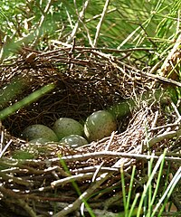

Article about the Blue Jay
Written by Alex Ewida

The trill of the blue jay can melt anyone's heart. I have watched these special birds since I was a little kid. They have such intelligence and complex social systems with tight family bonds.
The blue jay has a white feathered face with a blue crest, back, wings, and tail. It is also marked with black feathers. It is about 30 cm in length from the tip of its bill to the tip of its tail. They have a crest on their heads which is like a crown of feathers. When excited or frightened, their crest bristles outwards. Blue jays are native to eastern North America. They can be found in the eastern and central United States and across southern Canada.

From 1966 to 2015, the Blue Jay population decreased along the Atlantic coast, but it still increased more than 15% throughout Labrador, Nova Scotia, Quebec, and Manitoba. It migrates in flocks along the Great Lakes and Atlantic coasts. Most Jays migrate south one year, stay north the next winter, and then migrate south again the next year.
The Blue Jay may be noisy sometimes, but they are also quite bold. It flies with slow wing beats, making it easy prey for hawks and owls. Other predators like cats, crows, and raccoons may hunt for jay eggs. However, the Blue Jay has been known to sound an alarm call when hawks or other dangers are near. Young Blue Jays are well-known for being curious about brightly coloured or reflective objects, such as jewelry and coins. They will carry them around until they lose interest.

I've always enjoyed feeding peanuts and almonds to Blue Jays. They are omnivorous birds with 75% of their diet being vegetables. Their fondness for acorns is credited with helping spread oak trees around the environment. It's food sources also include weed seeds, grain, peanuts, bread, meat, fruits and other berries.
I've always wondered if the Blue jays around our house hide a nest nearby. It would be awesome to watch them hatch. Their mating season begins in mid-March and extends to July. They prefer evergreen trees for nesting. The nest is cup-shaped and made from twigs, small roots, bark, plants, and mud. Sometimes Blue jays may also build their nests in mailboxes or use nests built by other birds like robins. Blue jays mate for life and both parents build the nest. The male feeds the female while she is brooding the eggs. About 21 days after they hatch, the family travels together until early fall. They reach adulthood after one year of age.
The sound of the blue jays singing outside is quite heartwarming. Their most common sound is their alarm call which sounds similar to a gull-scream. There is also a high-pitched screech sound at high speed when the bird becomes agitated. Blue jays will use these calls to help each other and drive away predators.

In conclusion, I've always been very fond of the Blue jays. In my backyard, I watch them swoop down and land on my deck multiple times a day to retrieve the peanuts we put out for them. They remember how we feed them and come back every year. It's always an exciting day when they return to our house.